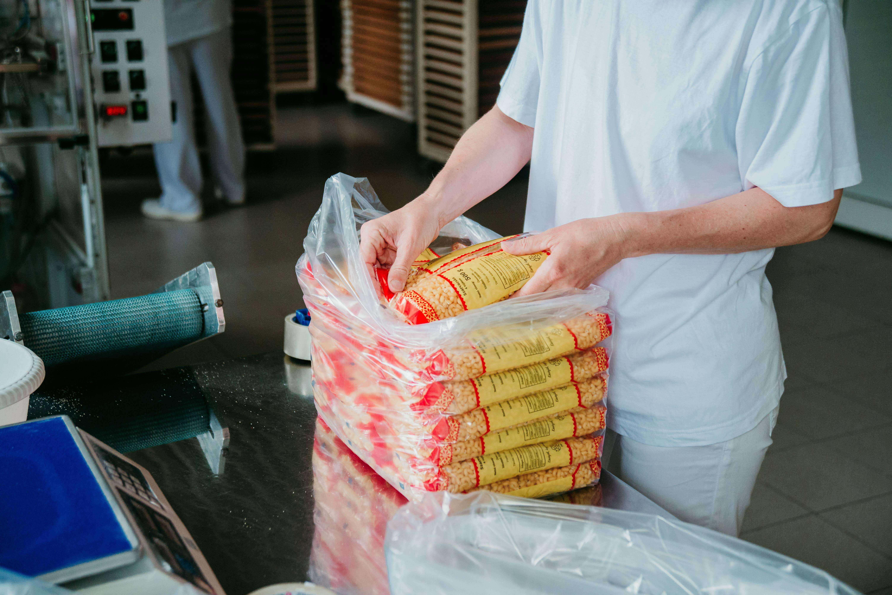
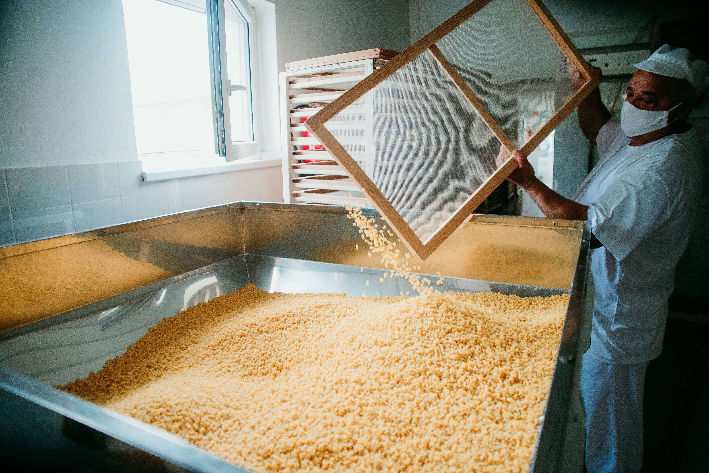

A Nyír-Aranytojás Kft. több mint 25 éve gyártja Laskod községben a jól ismert Laskodi Száraztésztákat. Családi vállalkozásként indultunk, azóta is ebben a formában gyártjuk a házias jellegű tésztáinkat.


Kezdettől azt tartottuk a legfontosabbnak, hogy megőrizzük azt a minőséget, amit hajdan szüleink házilag készítettek. Kizárólag hazai piacról beszerzett minőségi, friss tyúktojást és BFF 55 Réteslisztet használunk a gyártás folyamán.
Ezek felhasználásával készült száraztésztáink kifőzés után a háromszorosukat adják vissza. 1 kg száraztésztából **3 kg főtt tésztát** kapunk. A BL 55 búzalisztből készült tészták csak a kétszeresét adják vissza – ezért fontos, hogy vásárlóink ár–érték arány alapján is tudjanak dönteni!
